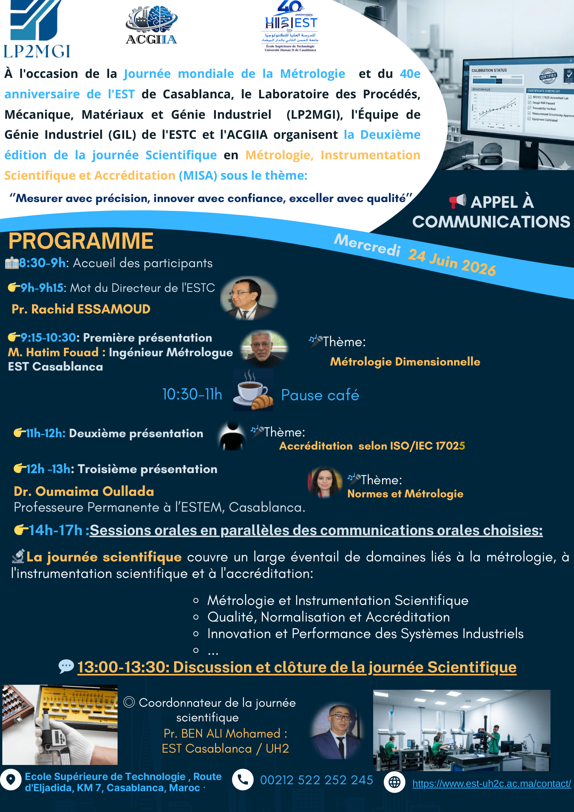

Thème 1 : Métrologie et Instrumentation Scientifique
Mesure dimensionnelle, instrumentation de laboratoire, traçabilité métrologique et techniques de contrôle pour garantir la fiabilité des résultats scientifiques et industriels.


Deuxième édition
Journée Scientifique en Métrologie, Instrumentation Scientifique et Accréditation
« Mesurer avec précision, innover avec confiance, exceller avec qualité »
À l'occasion de la Journée mondiale de la Métrologie et du 40e anniversaire de l'EST de Casablanca, le Laboratoire des Procédés, Mécanique, Matériaux et Génie Industriel (LP2MGI), l'Équipe de Génie Industriel (GIL) de l'ESTC et l'ACGIIA organisent la Deuxième édition de la journée Scientifique MISA.
Cette rencontre réunira chercheurs, enseignants-chercheurs, étudiants et professionnels autour des avancées en métrologie, instrumentation scientifique, qualité, normalisation et accréditation. Elle sera l'occasion de présenter les dernières avancées et d'échanger des idées.
La journée scientifique couvre un large éventail de domaines liés à la métrologie, à l'instrumentation scientifique et à l'accréditation.
Mot d'ouverture
Directeur de l'ESTC
Métrologie Dimensionnelle
Ingénieur Métrologue, EST Casablanca
Normes et Métrologie
Professeure Permanente à l'ESTEM, Casablanca
Coordonnateur
EST Casablanca / UH2
Laboratoire des Procédés, Mécanique, Matériaux et Génie Industriel
Équipe de Génie Industriel de l'École Supérieure de Technologie de Casablanca
Association partenaire de l'organisation de la journée scientifique MISA
Version image de l'affiche MISA 2026 pour une lecture facile sur tous les appareils.

L'inscription est ouverte aux chercheurs, enseignants, étudiants et professionnels intéressés par la métrologie et l'accréditation.
Contacter l'organisateur
Mercredi 24 juin 2026 · 8h30 – 17h
École Supérieure de Technologie, Route d'El Jadida, Km 7, Casablanca
Les auteurs sont invités à soumettre des communications orales dans les domaines de la métrologie, de l'instrumentation scientifique, de la qualité, de la normalisation et de l'accréditation.
Contacter pour soumettreLes communications sélectionnées seront présentées lors des sessions orales parallèles (14h – 17h). La date limite de soumission sera communiquée prochainement.
École Supérieure de Technologie (ESTC)
Route d'El Jadida, Km 7
Casablanca, Maroc
Téléphone : +212 522 252245
Site web : est-uh2c.ac.ma
{kind=link}